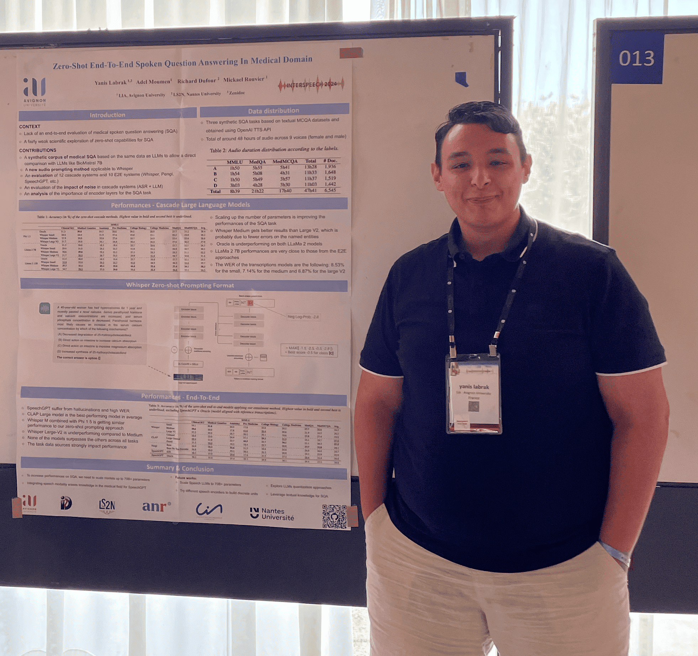

Organisation & Comité
Comité d'organisation
Richard Dufour
LS2N, Nantes Université

Yanis Labrak
Idiap Research Institute
Emmanuel Morin
LS2N, Nantes Université

Aurélie Névéol
LISN, Université Paris-Saclay
Aman Sinha
ATILF, Université de Lorraine
Laura Zanella
LISN, Université Paris-Saclay
Pierre Zweigenbaum
LISN, Université Paris-Saclay
Comité scientifique
Adrien Coulet Inria
Aman Sinha ATILF, Univ. de Lorraine
Aurélie Névéol LISN, Univ. Paris-Saclay
Benoît Favre LIS-Lab
Cyril Grouin LISN, Univ. Paris-Saclay
Emmanuel Morin LS2N, Nantes Université
Fleur Mougin Université de Bordeaux
Ioana Buhnila Chosun University
Irina Illina LORIA, Univ. de Lorraine
Laura Zanella LISN, Univ. Paris-Saclay
Lina Soualmia LITIS
Natalia Grabar Université de Lille
Pierre Zweigenbaum LISN, Univ. Paris-Saclay
Richard Dufour LS2N, Nantes Université
Salam Abbara CESP / Institut Pasteur
Salomé Klein Université de Strasbourg
Solen Quiniou LS2N, Nantes Université
Yanis Labrak Idiap Research Institute
Adrien Bazoge CHU de Nantes